Diffusion Models & Flow Matching
By Kourosh Salahi · CS180
This project implements Part A (Diffusion Models) and Part B (Flow Matching) from scratch. All experiments, sampling loops, image-to-image editing, inpainting, visual anagrams, hybrids, and UNet training results are documented below.
Part A — Diffusion Models
Part 0 — Prompt Embeddings & Setup
The prompts I used were the following: 'a high quality picture', 'an oil painting of a snowy mountain village', 'a photo of the amalfi coast', 'a photo of a man', 'a photo of a hipster barista', 'a photo of a dog', 'an oil painting of people around a campfire', 'an oil painting of an old man', 'a lithograph of waterfalls', 'a lithograph of a skull', 'a man wearing a hat', 'a high quality photo', 'a rocket ship', 'a pencil', 'a photo of a penguin', 'a photo of jungle animals playing poker', 'a cave painting of people playing video games', 'a roman sculpture of Lebron James with a crown', 'A Scifi Lunar civilization overlooking Earth', 'A photorealistic humanoid robot Hotel Concierge', 'A student with a shirt that says "BERKELEY CS" putting fries into a bag', 'An oil painting of a pirate', 'A wise mystical old man', 'A wizard casting a spell' The random seed I used was 189.
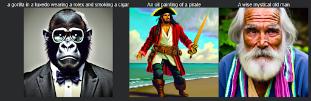
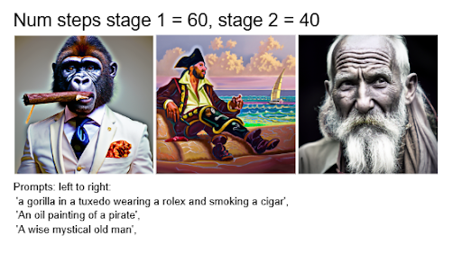
1.1 — Forward Process
Forward diffusion results for t = 250, 500, 750.

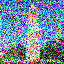

Part 1.1: Implementing the Forward Process
The forward diffusion process, $x_t$, was implemented to take a clean image, $x_0$, and add noise to it according to the specified variance schedule. This function is defined by: $$x_t = \sqrt{\bar{\alpha}_t} x_0 + \sqrt{1 - \bar{\alpha}_t} z$$ where $z \sim \mathcal{N}(0, I)$ is sampled Gaussian noise, and $\bar{\alpha}_t$ is the cumulative product of the $\alpha$ values up to time $t$.
In the forward(im, t) function, the implementation referenced the provided $\bar{\alpha}_t$ values stored in the alphas_cumprod tensor.
- I first retrieved the required $\bar{\alpha}_t$ value by indexing the alphas_cumprod tensor: alpha_t_bar = alphas_cumprod[t].
- Next, I generated the Gaussian noise tensor $z$ using torch.randn_like(im), ensuring it matched the shape and device of the input image.
- Finally, I applied the formula using PyTorch tensor operations: $$\text{noisy\_im} = \text{im} \cdot \sqrt{\text{alpha\_t\_bar}} + z \cdot \sqrt{1 - \text{alpha\_t\_bar}}$$
1.2 — Classical Gaussian Denoising
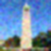
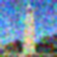
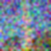
Part 1.2: Classical Denoising (Gaussian Blur)
Classical denoising was performed by applying a Gaussian blur filter to the noisy images generated in Part 1.1. This task highlighted the limitations of classical methods for high-level Gaussian noise removal.
The implementation used torchvision.transforms.functional.gaussian_blur. For each noisy image $x_t$ (at $t=[250, 500, 750]$), I experimented with different kernel_size and sigma values to achieve the "best" possible denoising result, despite the expected poor performance. For example, a setting like kernel_size=5 and sigma=2.0 was applied. The resulting images demonstrate that blurring removes high-frequency noise but simultaneously destroys image details and fails to recover the underlying clean structure, especially at high noise levels ($t=750$).
1.3 — One-Step Denoising
UNet one-step denoising results.
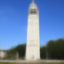
Part 1.3: One-Step Denoising
This section introduced the use of the pretrained DeepFloyd UNet denoiser (stage_1.unet) for estimating and removing noise in a single step, using the provided prompt embedding for "a high quality photo."
Given a noisy image $x_t$ and timestep $t$, the UNet predicts the noise $\epsilon_{\theta}(x_t, t, c)$. The clean image estimate, $\hat{x}_0$, is then calculated using the relationship derived from the forward process (Equation A.2): $$\hat{x}_0 = \frac{1}{\sqrt{\bar{\alpha}_t}} \left( x_t - \sqrt{1 - \bar{\alpha}_t} \epsilon_{\theta} \right)$$
Implementation Steps:
- $x_t$ and $t$ were moved to the correct device (cuda) and converted to half precision (.half()).
- The UNet was called: output = stage_1.unet(x_t, t, encoder_hidden_states=prompt_embeds, return_dict=False)[0].
- The noise estimate $\epsilon_{\theta}$ was extracted from the first three channels of the output: noise_pred = output[:, :3, :, :].
- The clean image estimate $\hat{x}_0$ was computed using the formula above.
1.4 — Iterative Denoising
Denoising progression from strided timesteps.
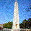
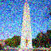
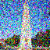
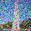
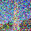
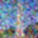
Part 1.4: Iterative Denoising (DDIM)
Iterative denoising uses a schedule of accelerated timesteps to denoise a noisy image over multiple steps.
Timestep Construction: I first created strided_timesteps, starting at 990 and decreasing with a stride of 30 until 0 (e.g., 990, 960, 930, ..., 30, 0). The DeepFloyd scheduler was initialized with these steps: stage_1.scheduler.set_timesteps(timesteps=strided_timesteps).
iterative_denoise(im_noisy, i_start) Function: This function looped backward from the starting index i_start. For each step $i \rightarrow i+1$ (from more noisy $t$ to less noisy $t'$), the UNet predicted the noise $\epsilon_{\theta}$. The next, less noisy state $x_{t'}$ was computed using the provided DDIM formula: $$x_{t'} = \sqrt{\bar{\alpha}_{t'}} \hat{x}_0 + \sqrt{1 - \bar{\alpha}_{t'} - \sigma_t^2} \epsilon_{\theta} + \sigma_t z$$ The $\hat{x}_0$ estimate was derived from the noise prediction, and the $\sigma_t z$ term (which accounts for stochasticity or variance) was handled by the provided add_variance utility function, using the predicted variance channels from the UNet output. This iterative application resulted in a high-quality clean image, demonstrating the stability of the DDIM-style sampling over the single-step method.
1.5 — Diffusion Model Sampling
Part 1.5: Diffusion Model Sampling
Image generation from scratch was achieved by setting the starting point of the iterative_denoise function to pure Gaussian noise and setting i_start = 0 (or i_start corresponding to the largest timestep).
Implementation Steps:
- Initialization: A noise tensor $x_{T}$ of shape $(1, 3, 64, 64)$ was created using torch.randn and moved to the correct device/dtype.
- Execution: The iterative_denoise function was called with this noise and the starting index for the largest timestep in strided_timesteps.
- Conditioning: The text prompt embedding for "a high quality photo" was used as the single conditioning input to the UNet at each step.
1.6 — Classifier-Free Guidance
Part 1.6: Classifier-Free Guidance (CFG)
Classifier-Free Guidance was implemented in the iterative_denoise_cfg function to boost the alignment between the generated image and the text prompt.
Implementation Details: At each step $t$:
- The UNet was executed twice:
- Conditional run using the prompt embedding $c$: $\epsilon_c = \text{UNet}(x_t, t, c)$.
- Unconditional run using the null prompt embedding $\emptyset$: $\epsilon_\emptyset = \text{UNet}(x_t, t, \emptyset)$.
- The new, guided noise estimate $\tilde{\epsilon}$ was calculated using the CFG formula with a scale $s=7.0$: $$\tilde{\epsilon} = \epsilon_{\emptyset} + s \cdot (\epsilon_{c} - \epsilon_{\emptyset})$$
- $\tilde{\epsilon}$ was then used in the DDIM sampling equation (from Part 1.4) to calculate $x_{t'}$. The conditional variance channels (from the $\epsilon_c$ output) were used with the add_variance utility.
1.7 — Image-to-Image Translation (SDEdit)
SDEdit results for noise levels i_start = 1, 3, 5, 7, 10, 20.

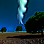
1.7.1 — Editing Hand-Drawn & Web Images
Web image edits across noise levels.
Hand-drawn images
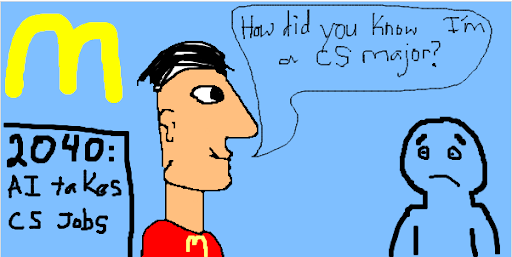
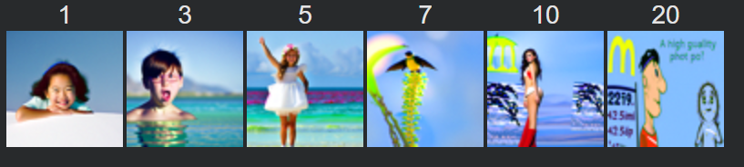
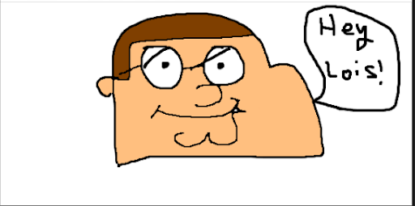
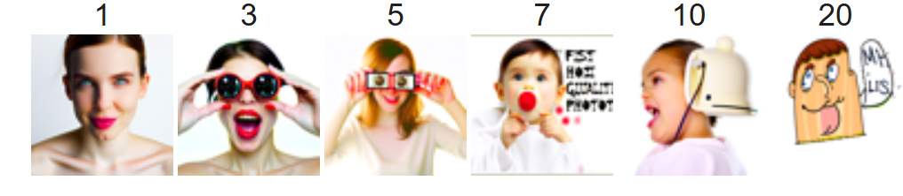
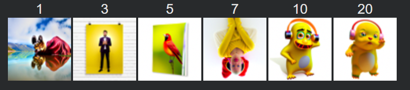
1.7.2 — Inpainting
Campanile inpainting results.


Inpainting example 2 — Alyosha
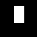
Inpainting example 3 — Tiger
Inpainting example 4 — SpongeBob Fries
1.7.3 — Text-Conditional Image-to-Image Translation
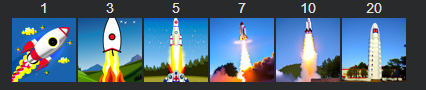
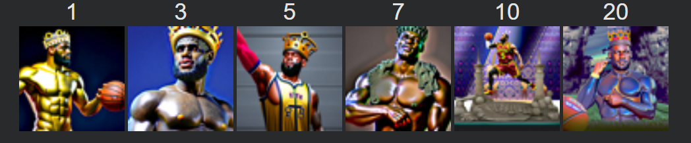
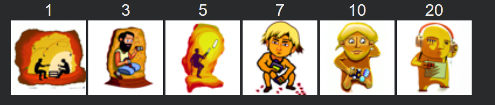
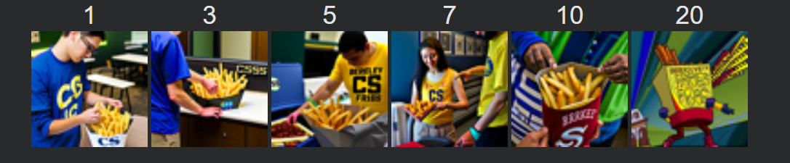
Part 1.7: Image-to-image Translation (SDEdit)
1.7.1 Editing Hand-Drawn and Web Images
SDEdit was implemented by combining the forward process (Part 1.1) with the iterative_denoise_cfg sampler (Part 1.6). This technique allows for semantic editing while preserving low-frequency structural details of the input image.
The core procedure involved:
- Applying noise to the input image $x_0$ using the forward(x_0, t_{start}) function to obtain $x_{t_{start}}$. The starting timestep $t_{start}$ was determined by the i_start index (e.g., $i\_start=10$ corresponds to $t_{start}=990 - 10 \times 30 = 690$).
- Passing $x_{t_{start}}$ into the iterative_denoise_cfg function, starting the reverse process from $t_{start}$ down to $t=0$.
1.7.2 Inpainting (RePaint)
Inpainting was implemented by modifying the iterative_denoise_cfg function to incorporate the mask constraint at every step (following the RePaint methodology).
Implementation Steps:
- The input image $x_0$ was first converted into a noisy starting image $x_{t_{start}}$ using the forward function. The original image was also diffused to all intermediate timesteps $x_{t'}$ for reference using the forward function.
- Inside the denoising loop, after computing the model's new sample $x_{t'}^{\text{model}}$ (the output of the DDIM step):
- The final $x_{t'}$ was calculated by blending the model's prediction in the masked area with the original image's diffused content in the unmasked area (where the content must be preserved): $$x_{t'} = M \odot x_{t'}^{\text{model}} + (1 - M) \odot \text{forward}(x_0, t')$$
- The mask $M$ was inverted to ensure the model's prediction fills the hole (where $M=1$ in the above formula), while the known content is copied from the noisy original image (where $M=0$).
1.7.3 Text-Conditional Image-to-image Translation
This was a direct extension of SDEdit (Part 1.7.1), but using a creative, descriptive text prompt (e.g., changing the Campanile into a "Rocket Ship") instead of the weak "a high quality photo."
The implementation reused the iterative_denoise_cfg function exactly as before, with the only change being the conditional prompt embedding $c$. The CFG mechanism ensured the new prompt guided the generation toward the semantic content of the text, while the starting noise level ($t_{start}$) still dictated how much of the original image's structure was retained. Higher noise levels successfully transformed the Campanile's structure into a rocket silhouette while retaining its spatial position.
1.8 — Visual Anagrams
Each illusion flips upside down when hovered. Three independent anagrams are shown below.
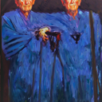
Part 1.8: Visual Anagrams
The visual_anagrams function was implemented to create images that transform into a different image when flipped upside down. This required modifying the noise prediction step to average two distinct conditional predictions.
Implementation Steps (inside the denoising loop):
- Compute the conditional noise $\epsilon_{c_1}$ using the current noisy image $x_t$ and the first prompt embedding $c_1$ (e.g., "old man").
- Flip $x_t$ upside down using torch.flip(x_t, dims=[2, 3]) to get $x_t^{\text{flip}}$.
- Compute the conditional noise $\epsilon_{c_2}$ using $x_t^{\text{flip}}$ and the second prompt embedding $c_2$ (e.g., "camp fire").
- Flip $\epsilon_{c_2}$ back to its original orientation: $\epsilon_{c_2}^{\text{flip}} = \text{flip}(\epsilon_{c_2})$.
- Average the noise estimates: $\tilde{\epsilon} = 0.5 \cdot (\epsilon_{c_1} + \epsilon_{c_2}^{\text{flip}})$.
- Use this averaged noise $\tilde{\epsilon}$ in the DDIM reverse step to calculate $x_{t'}$.
1.9 — Hybrid Images
Part 1.9: Hybrid Images (Factorized Diffusion)
The make_hybrids function implemented a "Factorized Diffusion" approach to create hybrid images that display different content based on viewing distance (combining high and low frequencies from two prompts).
Implementation Steps (inside the denoising loop):
- Compute two separate conditional noise estimates: $\epsilon_{c_1}$ (e.g., "skull") and $\epsilon_{c_2}$ (e.g., "waterfall") using their respective prompt embeddings.
- Apply a Low-Pass Filter (Gaussian Blur) to $\epsilon_{c_1}$: $\epsilon_{\text{low}} = \text{GaussianBlur}(\epsilon_{c_1})$. A kernel size of 33 and $\sigma=2$ was used, as recommended, via torchvision.transforms.functional.gaussian_blur.
- Compute the High-Pass noise from $\epsilon_{c_2}$: $\epsilon_{\text{high}} = \epsilon_{c_2} - \text{GaussianBlur}(\epsilon_{c_2})$.
- Average the noise estimates: $\tilde{\epsilon} = 0.5 \cdot (\epsilon_{\text{low}} + \epsilon_{\text{high}})$.
- Use this combined noise $\tilde{\epsilon}$ in the DDIM reverse step to calculate $x_{t'}$.
Part B — Flow Matching from Scratch
Part 1.1: Implementing the UNet
The UNet architecture was implemented from scratch using PyTorch modules, adhering to the structure shown in Figure 1, which utilizes downsampling, upsampling, and skip connections.
Structure: The model comprised an encoder (downsampling path), a bottleneck, and a decoder (upsampling path). The core components were:
- Conv Blocks (Conv, DownConv, UpConv): These were built using sequences of nn.Conv2d, nn.BatchNorm2d (BN), and nn.GELU activation. Downsampling was handled by the DownConv block using a stride of 2 (or an explicit nn.AvgPool2d followed by convolution). Upsampling (UpConv) utilized nn.ConvTranspose2d with a stride of 2 to reverse the downsampling operation.
- Skip Connections: The feature maps from the downsampling path were stored and later concatenated channel-wise (torch.cat()) with the corresponding upsampled feature maps in the decoder. This is crucial for retaining spatial details.
- Flatten/Unflatten: The deepest part of the network used an nn.AvgPool2d(kernel_size=7) for Flatten and a final nn.ConvTranspose2d for Unflatten to handle the $28 \times 28$ input resolution as it reduces to $7 \times 7$ after two downsampling steps (e.g., $28 \rightarrow 14 \rightarrow 7$).
1.2 — One-Step Denoising UNet Training
Training loss curve for the one-step denoiser.
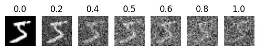
Epoch 1 reconstruction results
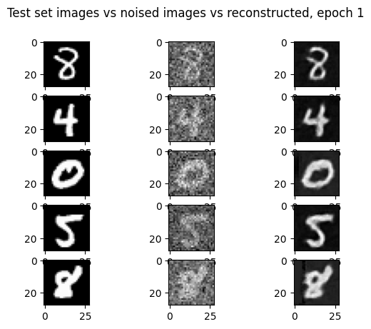
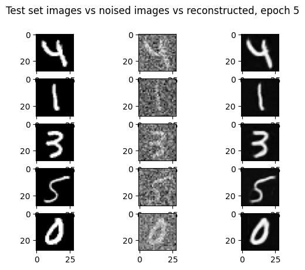
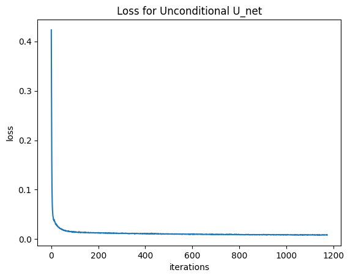
Reconstructed digits at test time
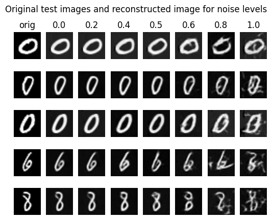
1.2.3 — Denoising Pure Noise
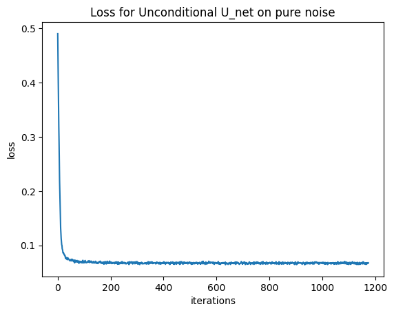
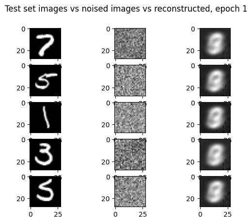
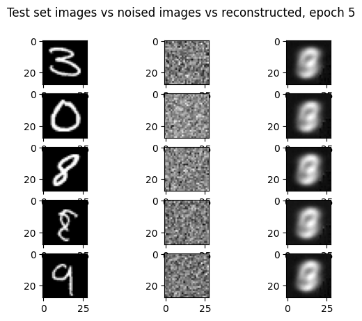
All of the outputs look like a blend of all of the different possible numbers, which makes sense since our loss is bringing our output closer the the mean of the overall data The observation that the model's output resembles a blurry blend of all possible digits (the 'average MNIST digit') is a direct consequence of the Mean Squared Error (MSE) loss used for training. Mathematically, the MSE loss drives the model to predict the conditional mean of the data distribution. When the input is pure noise, the model is unable to condition its output on any specific digit class, leading its optimal prediction to converge to the global mean of the entire MNIST dataset
Part 1.2: Using the UNet to Train a Denoiser
1.2.1 Training
The objective was to train the UNet, $f_{\theta}(x_t)$, to predict the clean image $x_0$ from a noisy sample $x_t$, minimizing the L2 loss: $\mathcal{L} = \| f_{\theta}(x_t) - x_0 \|^2$.
Data and Noising: The MNIST training set was loaded using torchvision.datasets.MNIST. Crucially, the noising process was implemented within the training loop, ensuring a different random noise level $\sigma$ and noise $z$ were applied to $x_0$ for every batch/epoch: $$x_t = x_0 + \sigma z$$ where $\sigma$ was fixed at $0.5$ for this part, and $z \sim \mathcal{N}(0, I)$.
Training Loop:
- The UNet was initialized with $D=128$. The nn.MSELoss() was used.
- The Adam optimizer was used with a learning rate of $1\text{e-}4$.
- For each batch $(x_0, \text{labels})$: $x_t$ was computed by adding noise $z \sim \mathcal{N}(0, I)$ scaled by $\sigma=0.5$.
- The UNet predicted the clean image: $\hat{x}_0 = \text{UNet}(x_t)$.
- Loss was computed: $\text{loss} = \text{MSE}(\hat{x}_0, x_0)$.
- Standard backpropagation followed: loss.backward(), optimizer.step().
1.2.2 Out-of-Distribution Testing
After training the $\sigma=0.5$ denoiser, its robustness was tested on out-of-distribution noise levels $\sigma \in [0.1, 0.9]$.
Observation: The denoiser performed well near its training distribution (e.g., $\sigma=0.4$ to $0.6$). However, for very low noise ($\sigma=0.1$), the output retained a slight blurring, as the model was trained to over-denoise inputs. For very high noise ($\sigma=0.9$), the output became severely corrupted or blurred, demonstrating the limitations of a single-step denoiser trained for a single noise level.
1.2.3 Denoising Pure Noise
To attempt image generation, the UNet was retrained with the objective of denoising pure noise ($\sigma \rightarrow \infty$) to a clean image $x_0$. This was implemented by setting $x_t = z$ (pure noise) in the training loop, effectively training the network to map $z \sim \mathcal{N}(0, I)$ directly to $x_0$.
Patterns Observed: The model quickly converged to an output resembling a blurred average of all MNIST digits. The generated outputs were typically blurry, centrally located gray shapes that vaguely captured the average structure of a digit.
Explanation: With an L2 (MSE) loss, training the model to predict $x_0$ from pure noise $z$ causes the model to learn the conditional mean, $E[x_0 | z]$, which in this case simplifies to approximating $E[x_0]$ (the mean of the data distribution) because $z$ contains no information about the specific $x_0$. Since the pure noise input is the same for all samples, the model learns a single output that minimizes the squared distance to all training examples. This optimal single point is the mean of the entire MNIST dataset, resulting in a representation of the "average digit."
Part 2.1: Adding Time Conditioning to UNet
To enable iterative flow matching, the UNet was modified to accept the scalar timestep $t \in [0, 1]$ as an input.
Implementation of FCBlock: This helper class was built with nn.Linear(F_in, F_out), followed by a $\text{GELU}$ and another $\text{Linear}$ layer, as suggested by Figure 5.
Time Injection: The scalar $t$ (normalized to $[0, 1]$) was processed by two instances of FCBlock (fc1_t and fc2_t) to produce time-dependent modulation vectors $t_1$ and $t_2$. These vectors were then broadcast-multiplied into the UNet's feature maps at specific locations:
- Unflatten Modulation: The feature map before the final upsampling (unflatten) was scaled by $t_1$: unflatten = unflatten * t1.
- Up1 Modulation: The feature map after the first upsampling block (up1) was scaled by $t_2$: up1 = up1 * t2.
2.2 — Training the Time-Conditioned UNet
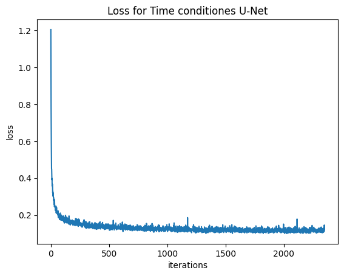
Part 2.2: Training the Flow Matching UNet
The UNet was trained to predict the flow field $v_t$ from the noisy sample $x_t$ to the clean sample $x_0$, using the objective $\mathcal{L} = \| v_{\theta}(x_t, t) - v_t(x_t) \|^2$.
Flow Definition: The target flow was defined by the straight path: $$v_t(x_t) = \frac{d x_t}{d t} = \frac{d}{d t} ( (1 - t) z + t x_0 ) = x_0 - z$$ where $x_t = (1-t)z + t x_0$, and $z \sim \mathcal{N}(0, I)$.
Training Loop Details:
- Model $D=64$, batch size 64. Adam optimizer with $\text{lr}=1\text{e-}2$.
- For each batch $(x_0, \text{labels})$:
- Sample $t \sim \mathcal{U}[0, 1]$ and $z \sim \mathcal{N}(0, I)$.
- Compute noisy sample: $x_t = (1 - t) z + t x_0$.
- Target flow: $v_t = x_0 - z$.
- Model prediction: $\hat{v}_t = \text{UNet}(x_t, t)$.
- Loss: $\text{loss} = \text{MSE}(\hat{v}_t, v_t)$.
- A torch.optim.lr_scheduler.ExponentialLR with $\gamma=0.995$ was used, and scheduler.step() was called after every epoch to gradually reduce the learning rate.
2.3 — Sampling from the Time-Conditioned UNet
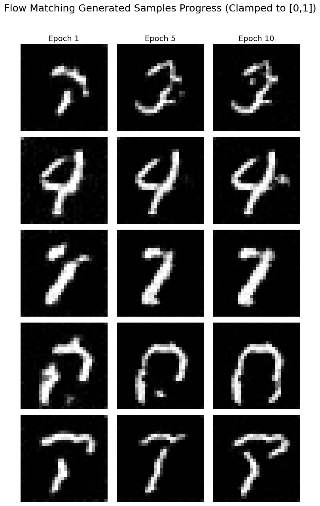
Part 2.3: Sampling from the UNet
Sampling utilized the trained time-conditioned UNet in an iterative process to solve the probability flow ODE (Algorithm B.2).
Sampling Algorithm: The process started with pure noise $x_0 = z \sim \mathcal{N}(0, I)$. We then iteratively moved through discrete timesteps $\Delta t$ (e.g., $N=50$ steps). The next state $x_{i+1}$ was estimated using the current model-predicted flow $\hat{v}_i$: $$x_{i+1} = x_i + \hat{v}_{\theta}(x_i, t_i) \cdot \Delta t$$ where $\Delta t$ is a small, negative time step (since we are integrating backward in time). This effectively moves the sample $x_i$ along the predicted velocity vector field towards $x_{final}$. The results after 10 epochs showed legible but often still noisy or blurry digits, confirming the model learned the basic flow but required further refinement or conditioning.
Part 2.4: Adding Class-Conditioning to UNet
To improve generation quality and control, the UNet was further conditioned on the target digit class $c \in \{0, \dots, 9\}$.
Class Vector Implementation: The class $c$ was converted into a one-hot vector (10 dimensions) before being processed by the class FCBlocks.
Conditional Injection (Modulation): Two sets of FCBlocks were used: $(\text{fc1\_t}, \text{fc2\_t})$ for time, and $(\text{fc1\_c}, \text{fc2\_c})$ for class. The time modulation $(t_1, t_2)$ and class modulation $(c_1, c_2)$ were combined additively and multiplicatively with the feature maps:
- Unflatten Modulation: unflatten = c1 * unflatten + t1
- Up1 Modulation: up1 = c2 * up1 + t2
2.5 — Class-Conditioned UNet Training
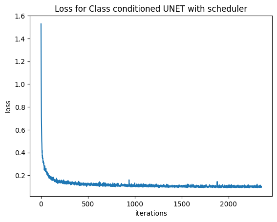
Part 2.5: Training the Class-Conditioned UNet
Training followed the same flow matching algorithm (Part 2.2), with the addition of the class conditioning $c$ and the dropout mechanism (Algorithm B.3). The use of class conditioning allowed for faster convergence and higher-quality results. The loss curve showed a similar stable decay, but generally reached a lower final loss than the time-only model, indicating a more precise fit to the data distribution.
2.6 — Sampling with Classifier-Free Guidance
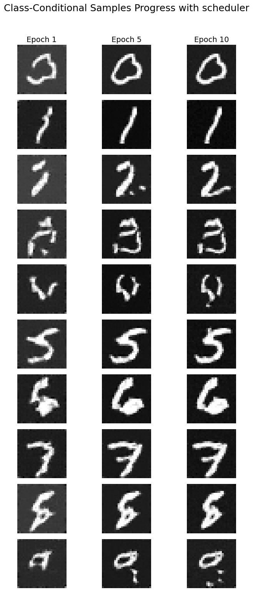
Without Scheduler
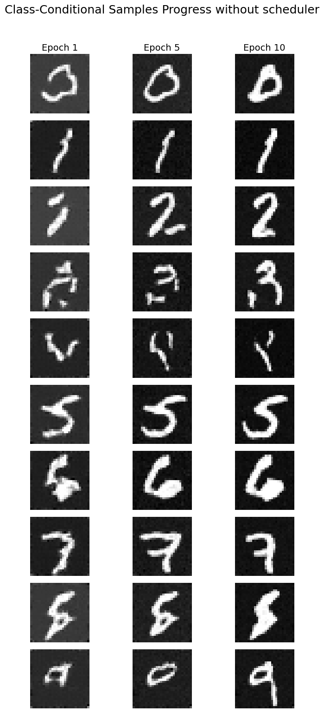
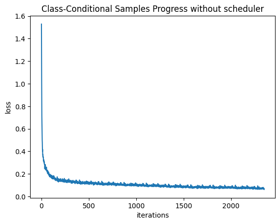
Scheduler analysis
When I removed the learning-rate scheduler, I also switched the optimizer from Adam to AdamW and reduced the learning rate by a factor of 10. Without scheduling, the model no longer benefits from gradual learning-rate decay, which normally stabilizes late-stage training. AdamW helps counterbalance this by decoupling weight decay from gradient updates, preventing parameter drift and reducing overfitting. Lowering the learning rate compensates for the absence of warmup and decay, making the optimization steps less volatile.
Conclusion
Reflection and summary of discoveries from both diffusion modeling and flow matching pipelines.